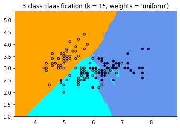
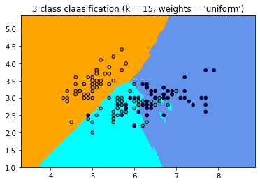

KNN Algorithm
4 weeks by kdh
Table of Contents
1 KNN
1.1 실습 예제2
1.1.1 import
import numpy as np import matplotlib.pyplot as plt from matplotlib.colors import ListedColormap from sklearn import neighbors, datasets
# Out[96]:
1.1.2 탐색할 변수 크기 설정
n_neighbors = 15
# Out[97]:
1.1.3 iris 데이터셋 로드
iris = datasets.load_iris() iris
# Out[98]:
#+BEGIN_EXAMPLE
{'data': array([[5.1, 3.5, 1.4, 0.2],
[4.9, 3. , 1.4, 0.2],
[4.7, 3.2, 1.3, 0.2],
[4.6, 3.1, 1.5, 0.2],
[5. , 3.6, 1.4, 0.2],
[5.4, 3.9, 1.7, 0.4],
[4.6, 3.4, 1.4, 0.3],
[5. , 3.4, 1.5, 0.2],
[4.4, 2.9, 1.4, 0.2],
[4.9, 3.1, 1.5, 0.1],
[5.4, 3.7, 1.5, 0.2],
[4.8, 3.4, 1.6, 0.2],
[4.8, 3. , 1.4, 0.1],
[4.3, 3. , 1.1, 0.1],
[5.8, 4. , 1.2, 0.2],
[5.7, 4.4, 1.5, 0.4],
[5.4, 3.9, 1.3, 0.4],
[5.1, 3.5, 1.4, 0.3],
[5.7, 3.8, 1.7, 0.3],
[5.1, 3.8, 1.5, 0.3],
[5.4, 3.4, 1.7, 0.2],
[5.1, 3.7, 1.5, 0.4],
[4.6, 3.6, 1. , 0.2],
[5.1, 3.3, 1.7, 0.5],
[4.8, 3.4, 1.9, 0.2],
[5. , 3. , 1.6, 0.2],
[5. , 3.4, 1.6, 0.4],
[5.2, 3.5, 1.5, 0.2],
[5.2, 3.4, 1.4, 0.2],
[4.7, 3.2, 1.6, 0.2],
[4.8, 3.1, 1.6, 0.2],
[5.4, 3.4, 1.5, 0.4],
[5.2, 4.1, 1.5, 0.1],
[5.5, 4.2, 1.4, 0.2],
[4.9, 3.1, 1.5, 0.2],
[5. , 3.2, 1.2, 0.2],
[5.5, 3.5, 1.3, 0.2],
[4.9, 3.6, 1.4, 0.1],
[4.4, 3. , 1.3, 0.2],
[5.1, 3.4, 1.5, 0.2],
[5. , 3.5, 1.3, 0.3],
[4.5, 2.3, 1.3, 0.3],
[4.4, 3.2, 1.3, 0.2],
[5. , 3.5, 1.6, 0.6],
[5.1, 3.8, 1.9, 0.4],
[4.8, 3. , 1.4, 0.3],
[5.1, 3.8, 1.6, 0.2],
[4.6, 3.2, 1.4, 0.2],
[5.3, 3.7, 1.5, 0.2],
[5. , 3.3, 1.4, 0.2],
[7. , 3.2, 4.7, 1.4],
[6.4, 3.2, 4.5, 1.5],
[6.9, 3.1, 4.9, 1.5],
[5.5, 2.3, 4. , 1.3],
[6.5, 2.8, 4.6, 1.5],
[5.7, 2.8, 4.5, 1.3],
[6.3, 3.3, 4.7, 1.6],
[4.9, 2.4, 3.3, 1. ],
[6.6, 2.9, 4.6, 1.3],
[5.2, 2.7, 3.9, 1.4],
[5. , 2. , 3.5, 1. ],
[5.9, 3. , 4.2, 1.5],
[6. , 2.2, 4. , 1. ],
[6.1, 2.9, 4.7, 1.4],
[5.6, 2.9, 3.6, 1.3],
[6.7, 3.1, 4.4, 1.4],
[5.6, 3. , 4.5, 1.5],
[5.8, 2.7, 4.1, 1. ],
[6.2, 2.2, 4.5, 1.5],
[5.6, 2.5, 3.9, 1.1],
[5.9, 3.2, 4.8, 1.8],
[6.1, 2.8, 4. , 1.3],
[6.3, 2.5, 4.9, 1.5],
[6.1, 2.8, 4.7, 1.2],
[6.4, 2.9, 4.3, 1.3],
[6.6, 3. , 4.4, 1.4],
[6.8, 2.8, 4.8, 1.4],
[6.7, 3. , 5. , 1.7],
[6. , 2.9, 4.5, 1.5],
[5.7, 2.6, 3.5, 1. ],
[5.5, 2.4, 3.8, 1.1],
[5.5, 2.4, 3.7, 1. ],
[5.8, 2.7, 3.9, 1.2],
[6. , 2.7, 5.1, 1.6],
[5.4, 3. , 4.5, 1.5],
[6. , 3.4, 4.5, 1.6],
[6.7, 3.1, 4.7, 1.5],
[6.3, 2.3, 4.4, 1.3],
[5.6, 3. , 4.1, 1.3],
[5.5, 2.5, 4. , 1.3],
[5.5, 2.6, 4.4, 1.2],
[6.1, 3. , 4.6, 1.4],
[5.8, 2.6, 4. , 1.2],
[5. , 2.3, 3.3, 1. ],
[5.6, 2.7, 4.2, 1.3],
[5.7, 3. , 4.2, 1.2],
[5.7, 2.9, 4.2, 1.3],
[6.2, 2.9, 4.3, 1.3],
[5.1, 2.5, 3. , 1.1],
[5.7, 2.8, 4.1, 1.3],
[6.3, 3.3, 6. , 2.5],
[5.8, 2.7, 5.1, 1.9],
[7.1, 3. , 5.9, 2.1],
[6.3, 2.9, 5.6, 1.8],
[6.5, 3. , 5.8, 2.2],
[7.6, 3. , 6.6, 2.1],
[4.9, 2.5, 4.5, 1.7],
[7.3, 2.9, 6.3, 1.8],
[6.7, 2.5, 5.8, 1.8],
[7.2, 3.6, 6.1, 2.5],
[6.5, 3.2, 5.1, 2. ],
[6.4, 2.7, 5.3, 1.9],
[6.8, 3. , 5.5, 2.1],
[5.7, 2.5, 5. , 2. ],
[5.8, 2.8, 5.1, 2.4],
[6.4, 3.2, 5.3, 2.3],
[6.5, 3. , 5.5, 1.8],
[7.7, 3.8, 6.7, 2.2],
[7.7, 2.6, 6.9, 2.3],
[6. , 2.2, 5. , 1.5],
[6.9, 3.2, 5.7, 2.3],
[5.6, 2.8, 4.9, 2. ],
[7.7, 2.8, 6.7, 2. ],
[6.3, 2.7, 4.9, 1.8],
[6.7, 3.3, 5.7, 2.1],
[7.2, 3.2, 6. , 1.8],
[6.2, 2.8, 4.8, 1.8],
[6.1, 3. , 4.9, 1.8],
[6.4, 2.8, 5.6, 2.1],
[7.2, 3. , 5.8, 1.6],
[7.4, 2.8, 6.1, 1.9],
[7.9, 3.8, 6.4, 2. ],
[6.4, 2.8, 5.6, 2.2],
[6.3, 2.8, 5.1, 1.5],
[6.1, 2.6, 5.6, 1.4],
[7.7, 3. , 6.1, 2.3],
[6.3, 3.4, 5.6, 2.4],
[6.4, 3.1, 5.5, 1.8],
[6. , 3. , 4.8, 1.8],
[6.9, 3.1, 5.4, 2.1],
[6.7, 3.1, 5.6, 2.4],
[6.9, 3.1, 5.1, 2.3],
[5.8, 2.7, 5.1, 1.9],
[6.8, 3.2, 5.9, 2.3],
[6.7, 3.3, 5.7, 2.5],
[6.7, 3. , 5.2, 2.3],
[6.3, 2.5, 5. , 1.9],
[6.5, 3. , 5.2, 2. ],
[6.2, 3.4, 5.4, 2.3],
[5.9, 3. , 5.1, 1.8]]),
'target': array([0, 0, 0, 0, 0, 0, 0, 0, 0, 0, 0, 0, 0, 0, 0, 0, 0, 0, 0, 0, 0, 0,
0, 0, 0, 0, 0, 0, 0, 0, 0, 0, 0, 0, 0, 0, 0, 0, 0, 0, 0, 0, 0, 0,
0, 0, 0, 0, 0, 0, 1, 1, 1, 1, 1, 1, 1, 1, 1, 1, 1, 1, 1, 1, 1, 1,
1, 1, 1, 1, 1, 1, 1, 1, 1, 1, 1, 1, 1, 1, 1, 1, 1, 1, 1, 1, 1, 1,
1, 1, 1, 1, 1, 1, 1, 1, 1, 1, 1, 1, 2, 2, 2, 2, 2, 2, 2, 2, 2, 2,
2, 2, 2, 2, 2, 2, 2, 2, 2, 2, 2, 2, 2, 2, 2, 2, 2, 2, 2, 2, 2, 2,
2, 2, 2, 2, 2, 2, 2, 2, 2, 2, 2, 2, 2, 2, 2, 2, 2, 2]),
'frame': None,
'target_names': array(['setosa', 'versicolor', 'virginica'], dtype='<U10'),
'DESCR': '.. _iris_dataset:\n\nIris plants dataset\n--------------------\n\n**Data Set Characteristics:**\n\n :Number of Instances: 150 (50 in each of three classes)\n :Number of Attributes: 4 numeric, predictive attributes and the class\n :Attribute Information:\n - sepal length in cm\n - sepal width in cm\n - petal length in cm\n - petal width in cm\n - class:\n - Iris-Setosa\n - Iris-Versicolour\n - Iris-Virginica\n \n :Summary Statistics:\n\n ============== ==== ==== ======= ===== ====================\n Min Max Mean SD Class Correlation\n ============== ==== ==== ======= ===== ====================\n sepal length: 4.3 7.9 5.84 0.83 0.7826\n sepal width: 2.0 4.4 3.05 0.43 -0.4194\n petal length: 1.0 6.9 3.76 1.76 0.9490 (high!)\n petal width: 0.1 2.5 1.20 0.76 0.9565 (high!)\n ============== ==== ==== ======= ===== ====================\n\n :Missing Attribute Values: None\n :Class Distribution: 33.3% for each of 3 classes.\n :Creator: R.A. Fisher\n :Donor: Michael Marshall (MARSHALL%PLU@io.arc.nasa.gov)\n :Date: July, 1988\n\nThe famous Iris database, first used by Sir R.A. Fisher. The dataset is taken\nfrom Fisher\'s paper. Note that it\'s the same as in R, but not as in the UCI\nMachine Learning Repository, which has two wrong data points.\n\nThis is perhaps the best known database to be found in the\npattern recognition literature. Fisher\'s paper is a classic in the field and\nis referenced frequently to this day. (See Duda & Hart, for example.) The\ndata set contains 3 classes of 50 instances each, where each class refers to a\ntype of iris plant. One class is linearly separable from the other 2; the\nlatter are NOT linearly separable from each other.\n\n.. topic:: References\n\n - Fisher, R.A. "The use of multiple measurements in taxonomic problems"\n Annual Eugenics, 7, Part II, 179-188 (1936); also in "Contributions to\n Mathematical Statistics" (John Wiley, NY, 1950).\n - Duda, R.O., & Hart, P.E. (1973) Pattern Classification and Scene Analysis.\n (Q327.D83) John Wiley & Sons. ISBN 0-471-22361-1. See page 218.\n - Dasarathy, B.V. (1980) "Nosing Around the Neighborhood: A New System\n Structure and Classification Rule for Recognition in Partially Exposed\n Environments". IEEE Transactions on Pattern Analysis and Machine\n Intelligence, Vol. PAMI-2, No. 1, 67-71.\n - Gates, G.W. (1972) "The Reduced Nearest Neighbor Rule". IEEE Transactions\n on Information Theory, May 1972, 431-433.\n - See also: 1988 MLC Proceedings, 54-64. Cheeseman et al"s AUTOCLASS II\n conceptual clustering system finds 3 classes in the data.\n - Many, many more ...',
'feature_names': ['sepal length (cm)',
'sepal width (cm)',
'petal length (cm)',
'petal width (cm)'],
'filename': '/Users/sroh/.pyenv/versions/anaconda3-5.3.1/envs/uiap/lib/python3.7/site-packages/sklearn/datasets/data/iris.csv'}
#+END_EXAMPLE
1.1.4 X, y를 설정
X = iris.data[:, :2] X
49 - cdd0b063-3734-4177-880f-3caee2f47fda
y = iris.target y
50 - 318be045-3282-4da1-ae7c-cb80aeab8e0e
1.1.5 그래프설정을 위한 메쉬내의 스텝 사이즈 설정
h = .02
51 - a3c819af-60c5-49f1-82aa-33825d45c42c
1.1.6 그래프설정
cmap_light = ListedColormap(['orange', 'cyan', 'cornflowerblue']) cmap_bold = ListedColormap(['darkorange', 'c', 'darkblue'])
52 - 28636668-d999-48e7-96f1-6d1e95f4184d
1.1.7 학습 및 그래프 그리기
for weights in ['uniform', 'distance']:
clf = neighbors.KNeighborsClassifier(n_neighbors, weights=weights)
clf.fit(X, y)
x_min, x_max = X[:, 0].min() - 1, X[:, 0].max() + 1
y_min, y_max = X[:, 1].min() - 1, X[:, 1].max() + 1
xx, yy = np.meshgrid(np.arange(x_min, x_max, h), np.arange(y_min, y_max, h))
Z = clf.predict(np.c_[xx.ravel(), yy.ravel()])
Z = Z.reshape(xx.shape)
plt.figure()
plt.pcolormesh(xx, yy, Z, cmap=cmap_light)
plt.scatter(X[:, 0], X[:, 1], c=y, cmap=cmap_bold, edgecolor='k', s=20)
plt.xlim(xx.min(), xx.max())
plt.ylim(yy.min(), yy.max())
plt.title("3 class claasification (k = %i, weights = '%s')" % (n_neighbors, weights))
plt.show()
 ]]
]]
]]
]]
 ]]
]]